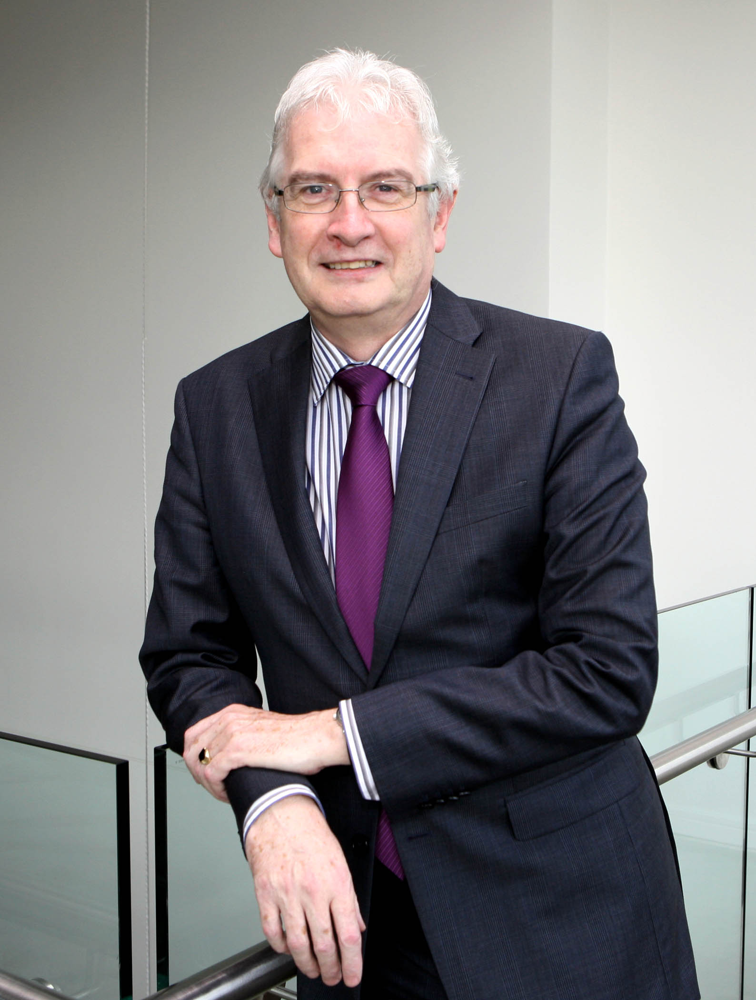

Pat Humphreys
Management Services Ltd
About
Pat Humphreys has a proven track record as an energetic, professional Operations Director and Leader with excellent communication and interpersonal skills. He has specialist experience in the areas of Lean Management, Manufacturing, Supply Chain Management and Leadership influencing skills in the pharmaceutical, chemical, electronics and food sectors. For the last 9 years he has worked with a diverse range of clients through his company Pat Humphreys Management Services Ltd. As a qualified facilitator and trainer Pat has worked closely with business owners, boards and senior executives to enable successful positive change and growth at the highest level.
Prior to this, Pat worked in various senior management positions for 22 years with the family owned multinational corporation Bourns Electronics. He understands the dynamics international business and the competitive challenges faced today by business leaders. He is an approved ‘Excellence Through People' Advisor and has carried out many mentoring assignments on behalf of Cork City and County Local Enterprise Offices and 'Enterprise Ireland' board.
Pat's academic achievements include an MSc in Lean Six-Sigma Quality Management from the University of Limerick. Pat is known to be an assertive, sincere, dependable and persevering individual. He brings a whole system perspective to clients which is invaluable; clarity about business focus and structure, the tough but essential questions, a blend of innovative ideas and common sense whilst attending to all aspects of the organisation - people and processes.